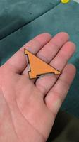

Have you ever needed a Linux application which only exists in the Windows world? Long-time Slashdot reader BrendaEM writes:
Windows does have a lot of useful app (but smaller than "power apps"). Some of these are closed source, some are open, but they're not all available in Linux yet.
My list would have to contain Gimp Tookit versions of: IrfanView image manager, which I think is unequaled in Linux (though it does work to some extent under Wine). I also miss the full version of 7-Zip, because of its better compression settings, which File-Roller does not provide, though the Linux port p7zip is available (though unnoticed by common distributions). Lastly, I think that Notepad++ would be a good addition to Linux.
That last one drew some pushback from long-time Slashdot reader jesco. "If there's one area where Linux shines, then it's the availability of high-quality text editors. Last time I looked Kate was still pretty nice, and there's Emacs, Vim and Neovim" if you're partial to command lines.
But are there any daily-drive apps you still find yourself needing? Share your own thoughts in the comments.
Which apps aren't available on Linux?
Read more of this story at Slashdot.
America's Justice Department and FBI teamed joined Finland's National Bureau of Investigation to arrest a teenager they say is part of one of the world's biggest cybercrime syndicates, reports Tom's Hardware. The "Scattered Spider" syndicate has extorted over $100 million in ransom payments, according to Department of Justice figures:
19-year-old Peter Stokes is a dual U.S.-Estonian citizen who was trying to board a flight to Japan from Helsinki, when law enforcement caught up with him. [T]he main criminal complaint against Stokes stems from a May 2025 attack on a luxury jewelry dealer based in the United States. The attackers apparently called the company's IT helpdesk using Google Voice, posing as employees. They were able to convince the help desk into resetting their credentials, which allowed them to infiltrate three accounts, two of which had admin privileges. From there, the group, allegedly including Stokes, stole important data and held the jeweler at ransom, demanding an $8 million payment in crypto. The company ultimately regained access to their infrastructure and avoided paying the ransom, but the operational disruption still caused a purported $2 million in losses. This served as the spark that led to Stokes' eventual arrest in Helsinki, as the prosecutors slowly followed the paper and digital trail laid by the attackers.
Microsoft played a key role in the process by providing GDID [Global Device Identifier] data to the FBI to help them apprehend the alleged criminal... [I]t's a unique identifier assigned to every Windows install that tracks device-specific telemetry. It's the reason why sometimes changing a major component in your PC can revoke your Windows license... [T]he court documents from the case reveal that Stokes used Windows, from which investigators were able to link his physical hardware to specific internet activity and locations... Stokes' web activity, videogame history, IP addresses, tool usage (including Ngrok), Azure status, and more were logged with timestamps, and were provided to the investigators by Microsoft...
Stokes was carrying two hard drives full of incriminating evidence with him when boarding his flight to Japan... His real identity has actually been known since 2024, but since he was a minor living across Estonia and the UAE at the time, he could only be monitored until the time was right.
The official criminal complaint even includes a selfie photo that Stokes posted on Snapchat (hiding his face behind dozens of hundred dollar bills). It then notes that behind Stokes the wallpaper, carpet, and furniture match New York's Empire Hotel — and that Stokes had visited the hotel's web site in Germany before then flying to New York...
"Following the arrest, Stokes was extradited to the U.S., where he appeared in front of a federal court in Chicago for the first time on June 30, 2026, and he remains in custody," adds Tom's Hardware.
"The accused is now awaiting trial, having been charged with conspiracy, cyber intrusion, and fraud..."
Read more of this story at Slashdot.
247,000 miles on an EV battery? So says the owner of a U.K.-based used-car sales company that specializes in Evs, who tells the Wall Street Journal EV batteries keep performing well even after several hundred thousand miles. "They are proving themselves to be exceptionally reliable."
After five years on the road, the average EV will still be able to drive up to 95% of its original range, according to Recurrent, a data-science company that provides a battery-monitoring tool for EVs — better than many in the auto industry expected...
Potential new car buyers' fear of having to pay for a battery replacement is the number one reason they choose to steer clear of EVs, according to a 2025 survey from industry research firm AutoPacific. When early EVs hit the market, buyers' concerns were well-founded. Roughly one in 12 EVs built from 2011 to 2016 have had to have battery replacements. But new data shows that more modern EVs are doing better so far. Among EVs built from 2022 on, 0.3% have had battery replacements, according to a 2025 study from Recurrent. As battery technology has advanced, EVs have avoided problems like the ones that plagued the original Nissan Leaf when it hit the market in 2010, for example. Those cars lacked the battery-cooling technology that is in newer EVs, and they made headlines for wearing down quickly. Buyer perception hasn't quite caught up, according to Scott Case, co-founder and chief executive of Recurrent...
The newest battery-powered EVs have lifespans comparable to internal-combustion-engine vehicles, even when driven more miles, according to Viet Nguyen-Tien, a research officer at the London School of Economics who focuses on Evs. Improvements in car batteries' chemical contents, battery-management systems and thermal regulation have been the difference in making batteries last longer and cost less, Nguyen-Tien said. Battery prices have fallen more than 90% since 2010, according to a BloombergNEF report from late last year. Industry analysts say battery-replacement costs are also improving as more EVs are designed for repairability in the long-haul. An out-of-warranty battery replacement can cost anywhere from $5,000 to $16,000, depending on the manufacturer, according to Recurrent. But many EV manufacturers have shifted to allow smaller components of their battery packs to be repaired, which can allow owners to avoid the full costs of a battery replacement, Case said.
EV batteries aren't without their challenges, though. A battery that is frequently fast-charged with high power loses its range, on average, at twice the rate of a battery charged at a lower power, according to telematics company Geotab. Frequently charging a battery to 100%, or letting it rest at 0% for extended periods, can also reduce range long-term. And EVs regularly deliver less range in extreme cold or heat.
The article also includes two new projections on EV adoption:
"The share of new EVs sold is expected to nearly double to 11% of new-car sales in the U.S. by 2030, according to industry consulting firm AlixPartners."
"Globally, EVs already make up 15% of new-car sales and are expected to form nearly a quarter of the global market by 2030, according to AlixPartners."
Read more of this story at Slashdot.
Subsea cables. Ukrainian power stations. Russian oil refineries. Even airports, water-desalination plants and Amazon data centers.
They've all become targets in wartime, notes the Wall Street Journal, and around the world now arguments "are already brewing between companies and governments over new regulations and potential costs."
In Germany, powerful associations representing private companies and municipal utilities have pushed back against new standards for physical protection, warning they could spell financial ruin. New Zealand's government has faced resistance from industry groups over a proposal to fine critical-infrastructure companies and their directors for cybersecurity breaches... A sign of how lines are blurring: The North Atlantic Treaty Organization's 32 countries last year agreed that as part of a pact to spend 5% of economic output on defense and security, 1.5% would go to military-adjacent needs including protecting critical infrastructure and networks. Spending targets range from cybersecurity and industrial capacity to railroads, bridges and ports needed for military logistics... "We need a wide concept of defense — defense is no longer just military," said Italian Adm. Giuseppe Cavo Dragone, NATO's top military adviser.
Adding to the complexity, companies now need to protect the data networks that serve as gateways to critical infrastructure. Hackers increasingly target not just computer files to steal information but also systems managing vital functions like building access and factory control, remotely causing physical damage or enabling espionage. U.S. authorities in April warned that Iranian hackers were trying to disrupt American drinking-water systems by targeting computer equipment that connects hardware with software. A year earlier, suspected Russian hackers remotely manipulated valves on a Norwegian hydroelectric dam...
Another challenge will be parsing jurisdictions and liability for assets that cross international waters or are damaged in combat — such as subsea data cables or energy pipelines. Turf battles between law enforcement and militaries are already complicating efforts... "The private owner can invest in redundancy, monitoring, and repair capacity, but only governments and militaries can really deter, patrol, attribute, or respond to hostile state activity," said Marc Glasser, who worked on cybersecurity and infrastructure security for three decades at the U.S. Department of Transportation and the Department of Homeland Security.... Companies say they need greater clarity from governments on what protections they will provide and subsidies to help them defend privately owned assets that provide a public good. Most governments don't provide incentives for companies to invest more than the minimum legal resilience requirements.
The article notes that in May the chief executive of California's Port of Long Beach "launched a cyber-defense operations center to thwart tens of thousands of cyberattacks daily, which jeopardize computer systems and all equipment connected to them."
The article also points out that the EU adopted new regulations requiring countries to reduce vulnerabilities, and new laws proposed in the U.K. now "seek to increase penalties for subsea sabotage, updating codes that date to when telegraph cables were first laid in the 19th century."
Read more of this story at Slashdot.
EchoStar's satellite pay-TV unit Dish DBS has filed for Chapter 11 bankruptcy
protection, reports Reuters. The move also applies to its wireless subsidiaries, according to the article, and "facilitates the wind-down of Dish Wireless's 5G network operations following an unexpected delay in a spectrum license sale to AT&T... under which EchoStar agreed to sell about 50 megahertz of its nationwide spectrum for $23 billion."
Some context from Deadline.com:
Charlie Ergen, who co-founded EchoStar and Dish, recently returned as chairman and CEO to steer the company through its recent challenges...
Even prior to the merger, Ergen had been working to pivot from the pay-TV business, where Dish now has just 5 million subscribers and streaming sibling Sling TV has another 2 million, toward wireless telecom. With wireless spectrum hitting the market due to the Sprint-T-Mobile merger and then Elon Musk's Starlink looking to ramp up in the sector, it seemed more attractive than the cord-cutting-ravaged pay-TV business. But it is still entails plenty of risk, especially given how tightly regulated the spectrum is due to security concerns.
Thanks to long-time Slashdot reader schwit1 for sharing the news.
Read more of this story at Slashdot.
Microsoft is investing $2.5 billion in a new group "assisting clients with AI implementations," reports CNBC:
[Microsoft] said Thursday that 6,000 employees will be embedded with clients, in a practice that's become known as forward deployed engineering [or FDE]... The announcement comes two days after cloud rival Amazon said it was putting $1 billion behind an FDE initiative to support fast-paced AI engagements. Leading AI labs Anthropic and OpenAI both established FDE groups in May, partnering with private equity firms, banks and consulting firms.
Alongside its technology peers, Microsoft has sunk tens of billions of dollars into building data centers that run generative AI models. Microsoft has also released a variety of AI services, with mixed results. The Microsoft 365 Copilot AI assistant has yet to gain anything approaching ubiquity in the business world, and the GitHub Copilot coding agent has ceded market share to newer players. Microsoft's stock has slumped 21% this year, by far the worst performance among the mega-cap tech companies. One concern on Wall Street is that AI models that quickly compose code might threaten mature software companies...
Microsoft has for years provided support and implementation services to customers. The company generated about $2.1 billion in revenue from enterprise and partner services in the March quarter, up 2.5% from a year earlier.
Read more of this story at Slashdot.
"A story widely accused on social media of being written using AI has gone on to win the overall Commonwealth short story prize," reports the Guardian.
In mid-May the story had been selected as a regional winner, but with critics on X and Bluesky "claiming it showed 'obvious markers' of AI use."
In the wake of the controversy, the Commonwealth Foundation conducted a review of the regional winners, which it said involved looking at drafts, time-stamped documents and notes. "We are satisfied with the testimonies of our writers and their confirmation that AI was not used in their writing," said foundation director-general Razmi Farook... Judging chair Louise Doughty described Nazir's piece as "an original, poetic and deeply moving story...." In a film released by the Commonwealth Foundation on Tuesday, Nazir... adds that he wrote six or seven drafts of his prize-winning story, and also speaks about his use of speech-to-text software, explaining that he could only see three or four lines of text on his phone screen at any one time, so he would perfect each line before moving on, which is how his story ended up being "highly polished"...
Initial social media reactions to the Commonwealth Foundation's announcement of Nazir's win were negative, with one X user writing: "immensely disappointing and disheartening. it feels like they wanted to stick to their guns after the entire GenAI uproar. I might think twice now before submitting my stories here". After Nazir was announced as the regional winner in May, some social media users reported running his story through AI-detection software. "Pangram flags at 100% but also, come on, if you know you know", said Wharton professor Ethan Mollick. However, the reliability of AI-detection software has been called into question.
In a statement to the Guardian, Farook said that "rather than surrender our judgment to AI-detection software, we asked our winners to show their working drafts, outlines, the evidence of an artistic journey. That software, it must be said, is not infallible: it returns inconsistent verdicts and, in doing so, corrodes the very trust on which a prize depends."
"When the machine's default voice is the metropolitan one, the writer who does not fit the expected mould is the first to fall under suspicion," she added. "The more startling her gift, the more her unfamiliar brilliance unsettles, the more readily she is accused of being a machine. A young writer in Kingston or Kolkata, in Kuala Lumpur or Kigali, must now prove not only her talent but her very humanity."
Nazir's story beat 7,806 other stories, the video points out (adding that their prize "demonstrates that in a world increasingly driven by algorithms, the human voice still matters.")
The Guardian notes that the winning story "includes multiple 'not x, but y' constructions and lists of three, which some consider to be signs of AI use," and that critics also drew attention to particular lines like "Sun on galvanise is a cruel instrument" and "Marsha lived two bends down."
In a new interview with the Times of India Nazir says "Now I'm frightened about publishing new work because the attacks haven't stopped."
Q: Which passages attracted the most criticism, and why do you think they were misunderstood?
Nazir: People criticised a line where I wrote: 'She had the kind of walking that made benches become men.' That's magical realism. Think Salman Rushdie or Gabriel Garcia Marquez. It's a literary technique. In my story, the character 'Zoongie' believes she is so beautiful that even when no men are around, she imagines the benches becoming men who admire her. It exists only in her imagination. People interpreted it literally. There was another line about light reflecting from a sink. That came directly from my childhood. Our kitchen faced east, and my mother liked to keep everything spotless. We used to polish the sink, and when the morning sun hit it, it glittered brightly. People claimed that the image must have been AI-generated. But it's from my lived experience...
I've lived with diabetes for 62 years, which has damaged the nerves in my fingers and feet, and I'm currently undergoing chemotherapy. That's why I began using speech-to-text on my Android phone... I hope this episode leads to a better understanding of the difference between assistive technology and AI-generated writing...
Q: Many acclaimed writers like Ursula K Le Guin, Mary Shelley, and JRR Tolkien have also been falsely flagged by AI detectors. Where does this leave writers?
Nazir: What these AI detectors are saying is that if a piece of writing is too polished, it must have been written by AI. I refuse to accept that. AI was trained on human writing. Large language models, to me, are tools, much like a word processor. They don't replace the human spirit behind creative writing. Ask an AI to write a prize-winning story on its own and see what it produces. You still need human imagination and judgment to create literature.
Nazir added, "What I don't understand is why people continue to question the judges' decision."
Read more of this story at Slashdot.
"The internet is filled with fakes," writes Gizmodo. "A court in India is setting out to address the problem by requiring more transparency from domain registrars to make it easier to crack down on fraud. And while the intentions might be good, Reuters is reporting that major American domain registrar GoDaddy is sounding the warning bells that the court's decision could fundamentally reshape the internet well beyond India's borders."
GoDaddy argues the move would even make the internet less safe, reports Reuters :
[Online fraud] is a key challenge for Prime Minister Narendra Modi's government, which last year received 2.4 million complaints of alleged cyber fraud amounting to $2.4 billion. Starting in 2019, lawsuits were brought by dozens of Indian and global firms — Amazon against fake shopping sites trading on its name and McDonald's complaining against bogus sites offering franchises. [More than 20 companies filed a complaint, the article notes, including Microsoft.] In December, an Indian court blocked more than 1,100 such websites. The New Delhi judge however went further, ordering sweeping new measures that tech experts say have rewritten rules of internet governance: Domain sellers should not offer buyers free privacy protection by default, the buyer's details should be released to anyone with a "legitimate interest" within 72 hours, and website addresses that are variations of protected brand names must be prohibited.
U.S.-based GoDaddy has challenged the directives before a larger bench of judges at the Delhi High Court, according to a Reuters review of non-public filings. It says the ruling will affect legitimate businesses that have names similar to big brands. Stopping privacy-by-default features, GoDaddy said, will result in public disclosure of name, address, telephone and email of legitimate website owners, exposing them to "foreseeable privacy and security risks" such as stalking and harassment.
As domain names operate globally, not locally, the order could force GoDaddy to regulate website addresses across the world, it said. On the court's order imposing a 72-hour deadline on companies to provide registration details to anyone with "legitimate interest", GoDaddy argues it has no wherewithal to assess who has legitimate interest or not. The "commercially destabilising" directives may force domain name companies to "exit India", said one of GoDaddy's appeal documents that ran into 5,121 pages... GoDaddy rivals, Arizona-based Namecheap and Netherlands-based Hosting Concepts, have also challenged the New Delhi ruling, court records show, although Reuters could not ascertain details of their appeals...
GoDaddy argues that diluting the privacy feature will run contrary to India's data protection law and the European Union GDPR law which mandates a "privacy by default" approach. Farzaneh Badii, a New York-based researcher on internet governance, criticised the New Delhi ruling, noting that Europe redacted such details because publishing them had been abused by harassment and targeted phishing. "The people exposed will be journalists, activists, small business owners, and private individuals. The brand impersonators will not," she said...
While the sweeping December directives were issued by a court, they followed government's submissions, documents showed... The judges will hear the appeals on July 16.
GoDaddy manages 80 million domains and serves over 20 million users, the article points out, with
annual revenue over $5 billion.
Read more of this story at Slashdot.
South Carolina's pine forests "have spent centuries hiding a secret as old as America itself," reports CBS News:
In August 1780, British and American soldiers clashed there, leading to a terrible defeat for the Continental army [fighting for the 13 colonies rebelling against England]. Battlefield archaeologists Jim Legg and Steve Smith have been studying the site for decades, but recently, they made a shocking discovery: The sandy soil was home to several sets of remains buried in shallow graves. Metal buttons suggested the men had been Continental soldiers, but there was no other identification... About 2,000 Continental soldiers were killed, wounded or captured, and some men never returned home.
Their families could only guess at their fates. But Legg and Smith's discovery, paired with an explosion in DNA technology, is changing what's possible. A set of remains, previously known only as 9B, has been identified as John Pumphrey, a young man from Maryland who enlisted in the Continental Army's 7th Maryland Regiment as young as 13...
Pumphrey likely marched more than a thousand miles with the regiment. The unit fought in battles with then-Gen. George Washington in New Jersey and Pennsylvania... The Pumphrey family still exists today. The DNA that helped identify Pumphrey's remains came from three women: Pam Donahue, Karen Pumphrey Etchison, and Nancy Pumphrey White... In late June, members of the extended Pumphrey family came together to hear his story and say his name for the first time in centuries. His remains are interred in South Carolina, where he and the other soldiers were discovered, but the tombstone, once marked "Unknown," will soon have his name carved on it.
Read more of this story at Slashdot.
As America began celebrating its 250th birthday Saturday, 842,000 homes reported power outages, notes ABC News. Figures from tracking site PowerOutage showed states in America's Northeast and Midwest were impacted by severe weather and extreme heat.
That number, which will fluctuate throughout the day as crews work to restore power, is for households, meaning that the number of people impacted by these outages is likely to be much larger... Millions of Americans, however, will be contending with a heatwave that is blanketing much of the country, including in Philadelphia where the Salute to Independence Semiquincentennial Parade that had been set for Friday was canceled due to the dangerous heat wave, according to Philadelphia ABC station WPVI. Elsewhere, America's Independence Day Parade, which was scheduled for 10:30 a.m. on July 4 in downtown Washington, D.C. was canceled by organizers late Friday evening due to the extreme heat in the District of Columbia... Amtrak announced it will be canceling a number of trains due to heat-related conditions.
The outages seemed to last throughout the day, with 790,103 household outages still in effect by 4:30 p.m. EST. Ironically, the power outages hit several American states that were among the country's original 13 freedom-declaring colonies, including New Jersey (143,072 outages), Pennsylvania (40,944 outages), and Virginia (27,392 outages).
CNBC adds that America's largest power grid operator said Friday "it was under a federal alert to cut electricity consumption across its territory as it battled generator outages, massive overloading on its transmission lines and a surge in air conditioning use from prolonged sweltering heat."
PJM said it told utilities to reduce electricity to customers who are under contract to reduce consumption during emergencies. PJM serves 67 million people in the Mid-Atlantic, South and Washington, D.C., area. Spot wholesale electricity prices in northern Virginia, home to the largest collection of data centers in the world, have surged beyond $2,000 per megawatt hour this week. That compares to about $40 per MWh when PJM is not in distress.
Read more of this story at Slashdot.
Microsoft is apparently shifting its profits to countries with low taxes — and out of countries where they have many more employees and significant sales. Back in 2005 Former Microsoft CEO Steve Ballmer even said that a low corporate tax rate "is part of the overall advantage of doing business in Ireland," remembers long-time Slashdot reader theodp. (Ballmer added "It would be disingenuous to say otherwise.")
But in 2026 the EU now requires a country-by-country compliance report, and the New York Times notes that Microsoft "was most likely the first major U.S. technology company to make a so-called country by country report of its finances to comply..."
Like other big companies, Microsoft uses transactions between subsidiaries to shift profits around to reduce its tax bill. The report revealed a consistent pattern: high returns in low-tax jurisdictions and slim margins in higher-tax ones. The report showed the sometimes absurd results. Microsoft said it had generated almost 40 percent of its pretax income in tax-friendly Ireland, where it employed about 3 percent of its global work force. In higher-tax Germany, the largest economy in Europe, Microsoft earned barely half of 1 percent of its global profits, it said.
Excluding Ireland, the company said, it generated less than 2 percent of its worldwide pretax earnings in Europe... [In Luxembourg Microsoft said it had $283 million in pretax income with only 34 employees.]
[America's] Internal Revenue Service is challenging profit-shifting transactions used by Microsoft, and is seeking back taxes of nearly $29 billion4. The company has said it disagrees with the I.R.S. and said in a securities filing that it "will vigorously contest" the proposed tax bills.
This week a Microsoft blog post offered their own "context," arguing that tax is "one important measure of contribution, but it is not the only one.
"Our investments, partnerships, infrastructure, and long-term presence in countries around the world also reflect a commitment to helping strengthen the economies and communities where we operate, today and for the future."
Read more of this story at Slashdot.
At the end of 2025, the FSF launched LibrePhone project, which is working to "better understand and reverse-engineer the nonfree blobs used by a great majority of (if not all) system on a chip designs available today." The FSF's summer newsletter shares this update:
We started with researching the proprietary files in Android phones supported by the Lineage project, an Android-based volunteer-led mobile phone operating system with much free software already in it. Our current, primary focus is on the radio blobs that control WiFi, Bluetooth, NFC, and cellular communications.
The software freedom issues with mobile computing have been around for a long time, with the most challenging issue being the baseband/modem firmware that relies heavily on proprietary software. This creates a technical and legal maze that is nearly impossible to break free from, but that doesn't mean we should ever stop working to create free systems. It certainly doesn't mean we shouldn't liberate the software that we know can be free software. Now, half a year into this project, lead developer Rob Savoye has extracted firmware from over 200 Lineage install packages, processed 85GB of files, and imported the results of these analyses into a PostgreSQL database for cross-device comparison... [M]uch of the software and blobs we need to work through are shared across multiple devices; this means even greater strides for mobile phone freedom...
As insurmountable as it may seem at times, every blob we manage to free up will be progress. The FSF has proven time and time again that it can bring the free software philosophy to life, not just by advocating for it, but by making it so.
The bulletin also describes how waves of botnets from "aggressive LLM scrapers, vulnerability scanners, poorly optimized CI/CD servers" inspired the FSF to create a new free-as-in-freedom automated monitoring tool:
In our efforts to combat the botnets, we optimized several detection rules to ban abusive behavior. We found the upper limit of fail2ban and replaced it with reaction, an efficient alternative with our configuration that uses ipset. We also split several monolithic machines into many separate machines so that when a web service is overwhelmed the other functions of the service do not go down with it... We found quite a few ways to respond to and prevent botnet attacks, but still faced a significant related challenge: communicating when a website or service is down...
Uptime Kuma is a human-readable, automated monitoring addition to our systems... You can check out our recently-launched self-hosted Uptime Kuma instance at https://status.fsf.org/. When you see the page, you will also likely say, "Wow! The FSF and GNU sure do run a ton of services!" and you would be right... If you maintain websites and services, and are looking for a simple way to communicate publicly with your users, consider using Uptime Kuma or another free software solution instead of choosing a proprietary monitoring solution."
There's also an article on the state of free-as-in-freedom videogame console emulators.
Read more of this story at Slashdot.
"The owner of AOL and other tech businesses hit Wall Street with a $1.7 billion initial public offering Wednesday," reports the Associated Press:
The company is getting $1 billion in proceeds, while the rest is going to shareholders. The stock surged 39.7% in its first day of trading under the symbol "BSP" on the Nasdaq, giving it a market value of $25.2 billion.
Among the company's well-known holdings are the event creation and ticketing company Eventbrite, and the video hosting service Vimeo... AOL itself went public in 1992 and was a vanguard of technology and communication. It reached a market value of $164 billion in 2000 shortly before merging with Time Warner. It then crashed along with the rest of the industry following the bursting of the dot-com bubble. It has been bought and sold several times over the last two decades...
[Italy-based Bending Spoons] was founded by three friends in 2013 following the failure of their first attempt at building a technology startup. It has since grown by buying more than 50 companies. The acquired companies are reorganized, and AI technology is often a key tool in the redesign. The focus remains on subscription-based revenue from the portfolio of businesses. The company said it had net income of $27.5 million on revenue of $601 million during the first three months of 2026. It had more than 500 million monthly active users and 9 million monthly paying customers as of March. The company has debt of just under $4.4 billion. It plans to use proceeds from the offering to invest in new acquisitions.
The article notes that in the company's prospectus, it says they chose the name Bending Spoons because "We were about to attempt to create a world-class company with $40,000, a team of five, and a track record that read 0 for 1. A touch of irony seemed appropriate."
Read more of this story at Slashdot.
CNN reports:
Prehistoric human relatives, nicknamed "hobbits" due to their short stature, may have been scavengers, rather than skilled hunters capable of taking down big game or building cooking fires, according to new research. The study adds to growing evidence that Homo floresiensis, which had a brain only slightly bigger than that of a chimpanzee, wasn't as advanced as scientists previously believed....
The researchers believe that much like how Komodo dragons hunt water buffaloes today, they were using their venomous bite to take down Stegodons — and after the scene was clear, Homo floresiensis swept in to cleave meat from what remained... The new study reinforces a long-held suspicion that Homo floresiensis is not a dwarfed form of Homo erectus but a descendant of a more primitive Homo habilis-like or Australopithecus-like form that arrived on the island more than1 million years ago, said Dr. Chris Stringer, a research leader specializing in human origins and paleoanthropology at London's Natural History Museum.
Read more of this story at Slashdot.
An anonymous reader shared this report from TechCrunch:
Two hundred and fifty years after the signing of the Declaration of Independence, a new commercial from Google asks: What if the Founding Fathers had access to Google Workspace?
With the tagline "Group project, but make it 1776," the ad depicts a largely unseen Thomas Jefferson mid-draft when he gets a nagging text from Ben Franklin, leading to a very Google-centric collaboration process. Edits are suggested in Google Docs, a meeting gets scheduled in Google Calendar and conducted remotely via Google Meet (with every single attendee apparently turning their camera off?), then the whole thing is finalized with e-signatures; cue the fireworks.
Of course, since this is an ad from a tech company in the year 2026, AI has a role to play. The fictionalized founders use Google's "help me visualize" AI tool to try out different animals on the national seal, Gemini takes notes on the meeting, and the founders also ask the chatbot for advice before declining King George III's document access request.
TechCrunch call it "very tongue-in-cheek," noting that at one point Samuel Adams even asks, "Can we settle this over beers?" And they argue that "the AI evangelism is relatively discreet when compared to many other recent ads."
Read more of this story at Slashdot.
Wency Chen / South China Morning Post : ByteDance's Doubao and Alibaba's Qwen will disable humanlike and user-created agents before July 15, as China's anthropomorphic AI interaction rules take effect — Two of China's major consumer-facing artificial intelligence apps, ByteDance's Doubao and Alibaba Group Holding's Qwen …
Josh Zoffer / Financial Times : Data centers offer US a chance to get ahead in the next key technologies and to build domestic supply chains based on demand rather than subsidies and tariffs — America must not repeat the mistakes that handed China rare-earth dominance … America's China policy over the past decade …
Patricia Kowsmann / Wall Street Journal : Chainalysis: addresses linked to Iran, Russia, North Korea, and other US-sanctioned entities received $100B+ in crypto last year, almost 8x the amount in 2024 — Blacklisted entities handled $100 billion in crypto in 2025, financing terrorism and weapons — Iran, Russia, North Korea …
New York Times : Analysis: ~1M $TRUMP retail buyers lost a combined $3.81B, while ~500K mostly-early wallets captured $4B in gains, a textbook memecoin wealth transfer — A report from a cryptocurrency analytics firm details how those who bought the Trump memecoin have fared, with most retail investors having lost money …
Olivia Carville / Bloomberg : A profile of Kaley Glenn-Mills, the plaintiff in K.G.M. v. Meta et al., who was awarded $6M in damages in a landmark LA jury trial over social media addiction — Kaley Glenn-Mills' lawsuit reshaped the fight to protect children from social media. She says she still can't stop scrolling.
Financial Times : Bending Spoons' Nasdaq IPO caps its 50+ deals across 10+ years that transformed the Italian startup into a highly leveraged internet company with ~$4.4B in debt — Nasdaq listing caps more than a decade of deals that transformed an Italian start-up into a global internet company
Sofia Chesnokova / Tech Funding News : NY-based LinqAlpha, which provides AI-powered market research tools for hedge funds, raised a $22M Series A co-led by AVP, Atinum Investment, and GFT Ventures — - LinqAlpha, an AI research platform for hedge funds and asset managers, has raised $22 million in a Series A round led by AVP, Atinum Investment and GFT Ventures.
Kieran Smith / Financial Times : Sources: Uber halts plans to launch food delivery in five of the seven European countries it had targeted for expansion as it pursues a Delivery Hero takeover — Ride-hailing company will no longer launch in five of its seven planned new markets this year — Uber has paused the majority …
Sejal Sharma / Hindustan Times : India issues a notice to Telegram, asking it to curb the spread of pirated films and other copyrighted content, and seeks an action-taken report within 15 days — The Ministry of Information and Broadcasting (MIB) issued a notice to Telegram on Saturday, asking the messaging platform …
Simon Sharwood / The Register : AWS says Mechanical Turk will no longer accept new customers and that it is placing the crowdsourcing service in maintenance, signaling its future retirement — Workers who use OG crowdsourcing platform say AWS is closing accounts — Amazon Web Services will stop accepting new customers …
Aisha Down / The Guardian : Source calls UK- and OpenAI-touted plans in 2025 for Stargate's ~£20B Cobalt site a PR stunt; OpenAI and Nscale failed to visit Cobalt or lodge planning forms — Exclusive: £20bn of ‘potential’ £30bn AI investment touted by UK ministers appears to have been hypothetical
Marcel Thee / Nikkei Asia : Indonesia's enforcement of social media restrictions for under-16s has been patchy, with tech companies ignoring the rules and youth still accessing platforms — JAKARTA — Andreas Humala, a multimedia lecturer at the London School of Public Relations in Jakarta, recently overheard …
Katherine Bindley / Wall Street Journal : How some high-income families use AI-powered private schools and tutors, such as Alpha School, to teach their children life skills and tailor their curriculum — People who can afford to send their grade-school kids anywhere are choosing new alternative education
Financial Times : A look at the troubled rollout of the EU's automated biometric entry/exit border system, as airport operators warn of severe delays ahead of the summer holidays — Automated system first mooted in 2008 was meant to keep out criminals — instead, it is delaying travellers
Nilesh Christopher / Los Angeles Times : How ByteDance is making Hollywood inroads with its Seedance video generator, thanks to low pricing, striking realism, and features like timeline-based prompting — - 8 min Click here to listen to this article … - A viral AI video of Brad Pitt and Tom Cruise sparked industry outrage …